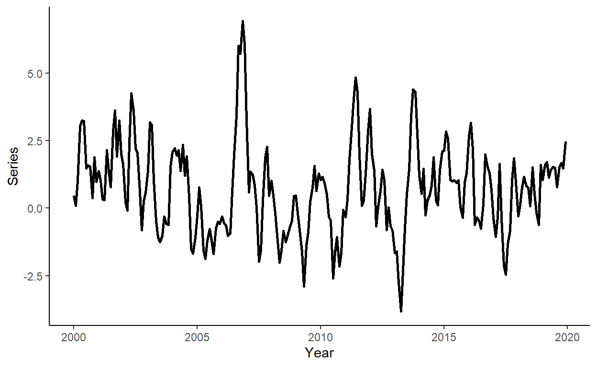

In this tutorial, we will generate a time series, we will obtain one-step-ahead forecasts from competing models using a rolling window procedure, and we will perform the Diebold-Mariano type regression-based test for equal predictive ability of the competing models. To run the code, the data.table, ggplot2, lmtest, and sandwich packages need to be installed and loaded.
library(data.table)
library(ggplot2)
library(lmtest)
library(sandwich)Let’s generate a time series that follow an AR(2) process of the following form: \[y_t = 0.2+1.1y_{t-1}-0.3y_{t-2}+\varepsilon_t\] where \(e_{t} \sim N(0,\sigma^2)\).
n <- 240
set.seed(6)
e <- rnorm(n,0,1)
y <- rep(NA,n)
y[1] <- 0.2+e[1]
y[2] <- 0.2+1.1*y[1]+e[2]
for(i in 3:n){
y[i] <- 0.2+1.1*y[i-1]-0.3*y[i-2]+e[i]
}Generate a vector of some arbitrary dates (e.g., suppose we deal with the monthly series beginning from January 2000), store these along with \(y\) in a data.table, call it ‘dt’, and plot the realized time series using ggplot function.
date <- seq(as.Date("2000-01-01"),by="month",along.with=y)
dt <- data.table(date,y)
ggplot(dt,aes(x=date,y=y))+
geom_line(size=1)+
labs(x="Year",y="Series")+
theme_classic()
Suppose the candidate models are AR(1), AR(2), and AR(3), and that we want to compare forecasts obtained from these models to those from a random walk process. Generate a sequence of one-step-ahead forecasts using the rolling window scheme, where the first rolling window ranges from period 1 to period 180. Calculate the RMSFE measures for the canddidate models.
dt[,`:=`(y1=shift(y,1),y2=shift(y,2),y3=shift(y,3))]
R <- 180
P <- nrow(dt)-R
dt[,`:=`(rw=as.numeric(NA),a1=as.numeric(NA),a2=as.numeric(NA),a3=as.numeric(NA))]
for(i in 1:P){
dt$rw[R+i] <- dt$y[R+i-1]
ar1 <- lm(y~y1,data=dt[i:(R+i-1)])
ar2 <- lm(y~y1+y2,data=dt[i:(R+i-1)])
ar3 <- lm(y~y1+y2+y3,data=dt[i:(R+i-1)])
dt$a1[R+i] <- ar1$coefficients%*%as.numeric(c(1,dt[R+i,c("y1")]))
dt$a2[R+i] <- ar2$coefficients%*%as.numeric(c(1,dt[R+i,c("y1","y2")]))
dt$a3[R+i] <- ar3$coefficients%*%as.numeric(c(1,dt[R+i,c("y1","y2","y3")]))
}
dt$rw_e <- dt$y-dt$rw
dt$a1_e <- dt$y-dt$a1
dt$a2_e <- dt$y-dt$a2
dt$a3_e <- dt$y-dt$a3
# RMSFEs
sqrt(mean(dt$rw_e^2,na.rm=T))## [1] 0.9653331sqrt(mean(dt$a1_e^2,na.rm=T))## [1] 0.9053279sqrt(mean(dt$a2_e^2,na.rm=T))## [1] 0.8842908sqrt(mean(dt$a3_e^2,na.rm=T))## [1] 0.8877883Do the autoregressive models generate ‘statistically significantly’ more accurate forecasts than the random walk model? We will answer this question by performing the regression-based Diebold-Mariano tests. First we will generate the loss differentials; then we will run three separate regressions to assess predictive accuracy of AR(1), AR(2), and AR(3) relative to the random walk; and finally we will base our decision on the heteroskedasticity and autocorrelation consistent standard errors.
dt$ld1 <- dt$rw_e^2-dt$a1_e^2
dt$ld2 <- dt$rw_e^2-dt$a2_e^2
dt$ld3 <- dt$rw_e^2-dt$a3_e^2
reg_ld1 <- lm(ld1~1,data=dt)
reg_ld2 <- lm(ld2~1,data=dt)
reg_ld3 <- lm(ld3~1,data=dt)
lmtest::coeftest(reg_ld1,vcov.=sandwich::vcovHAC(reg_ld1))##
## t test of coefficients:
##
## Estimate Std. Error t value Pr(>|t|)
## (Intercept) 0.112249 0.047525 2.3619 0.0215 *
## ---
## Signif. codes: 0 '***' 0.001 '**' 0.01 '*' 0.05 '.' 0.1 ' ' 1lmtest::coeftest(reg_ld2,vcov.=sandwich::vcovHAC(reg_ld2))##
## t test of coefficients:
##
## Estimate Std. Error t value Pr(>|t|)
## (Intercept) 0.149898 0.083086 1.8041 0.07632 .
## ---
## Signif. codes: 0 '***' 0.001 '**' 0.01 '*' 0.05 '.' 0.1 ' ' 1lmtest::coeftest(reg_ld3,vcov.=sandwich::vcovHAC(reg_ld3))##
## t test of coefficients:
##
## Estimate Std. Error t value Pr(>|t|)
## (Intercept) 0.143700 0.081309 1.7673 0.08235 .
## ---
## Signif. codes: 0 '***' 0.001 '**' 0.01 '*' 0.05 '.' 0.1 ' ' 1Page built: 2022-11-13 using R version 4.2.1 (2022-06-23 ucrt)